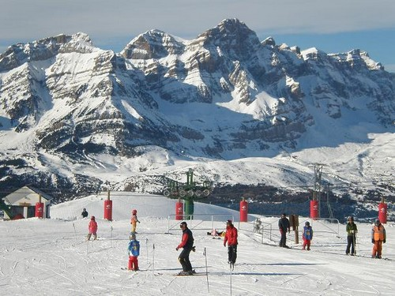

Estación de Esquí de Javalambre
La estación de esquí de Javalambre se encuentra en la sierra homónima, en la provincia de Teruel. Es el destino ideal para aquellos que desean iniciarse en el mundo del esquí, gracias a su ambiente tranquilo y familiar, junto con modernas instalaciones. Javalambre ofrece un total de 15 kilómetros esquiables, con pistas aptas para todos los niveles, desde principiantes hasta esquiadores más experimentados. Su sistema de innivación artificial asegura nieve de calidad durante toda la temporada, lo que garantiza una experiencia inmejorable en cualquier momento del año. La estación cuenta con cómodos remontes, zonas específicas para el aprendizaje y una amplia variedad de servicios, como alquiler de material, escuelas de esquí y cafeterías. Esto hace de Javalambre un destino accesible y cómodo para disfrutar de la nieve. Rodeada de los hermosos paisajes de la sierra de Javalambre, la estación es el lugar perfecto para combinar naturaleza, deporte y relajación, siendo ideal para disfrutar del invierno en familia o con amigos.
